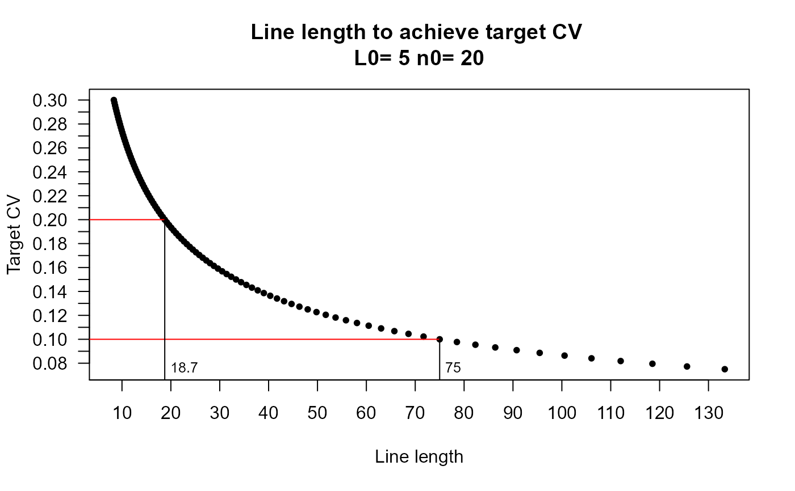
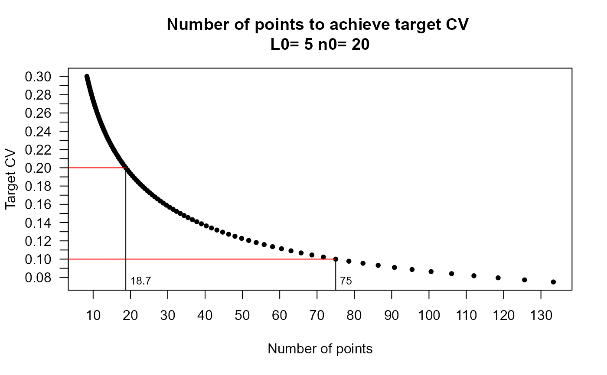

Computes the predicted required survey effort to achieve a range of target CV's (coefficient of variation) values given pilot survey information. This information is displayed in a plot if the number of cv.values is greater than or equal to 5. The plot values for the target CV versus effort are returned as a data.frame (invisibly for 5 or more CV values).
Usage
calculate.effort(
L0,
n0,
q = 3,
line.point = "line",
cv.values = seq(0.075, 0.3, length = 100)
)Arguments
- L0
effort deployed in pilot study (line length or number points)
- n0
number of detections during pilot study
- q
approximate variance in density from pilot study. Default value 3.
- line.point
switch indicating whether intended survey is line or point
- cv.values
CV values you wish the function to calculate the effort for. Defaults to a range of 100 values between 0.075 and 0.3.
Value
Plots the target cv vs effort (if the length of cv.values is >= 5) Returns a data.frame (invisibly if the length of cv.values is >= 5) containing two fields
L - effort, either length of line transect or number points
cv - precision (cv) expected from given effort
Details
Horizontal and vertical lines are added to the plot at approximately every 0.1 CV interval. The exact values displayed will be the closest point equal to these values or the next smallest CV value and its corresponding effort from the data.frame.
Computations based on formulas for points and lines found in Section 2.4.2 of Buckland et al. (2015).
References
Buckland, S. T., Rexstad, E. A., Marques, T. A., & Oedekoven, C. S. (2015). Distance Sampling: Methods and Applications. Springer International Publishing. https://doi.org/10.1007/978-3-319-19219-2
Examples
# Line transect pilot survey with 20 sightings on a line of length
# 5 units.
calculate.effort(L0 = 5, n0 = 20)

# Point transect pilot with 20 sightings over 5 points
calculate.effort(L0 = 5, n0 = 20, line.point="point")

# To find a single value for a target CV of 0.15
calculate.effort(L0 = 5, n0 = 20, line.point="point", cv.values = 0.15)
#> Effort CV
#> 1 33.33333 0.15